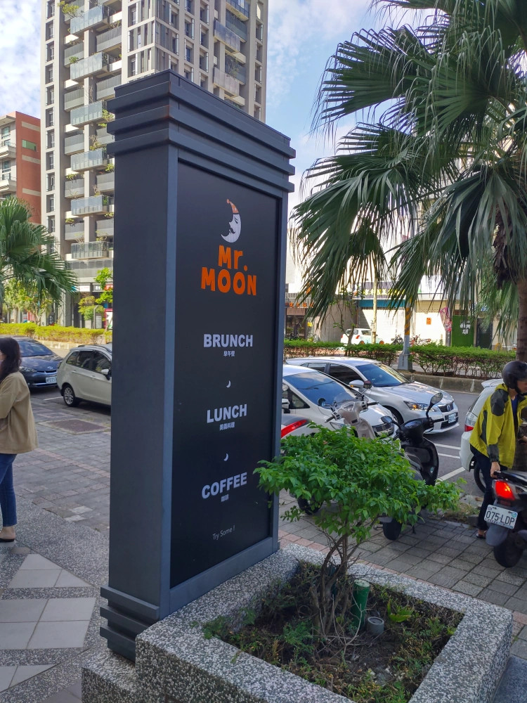
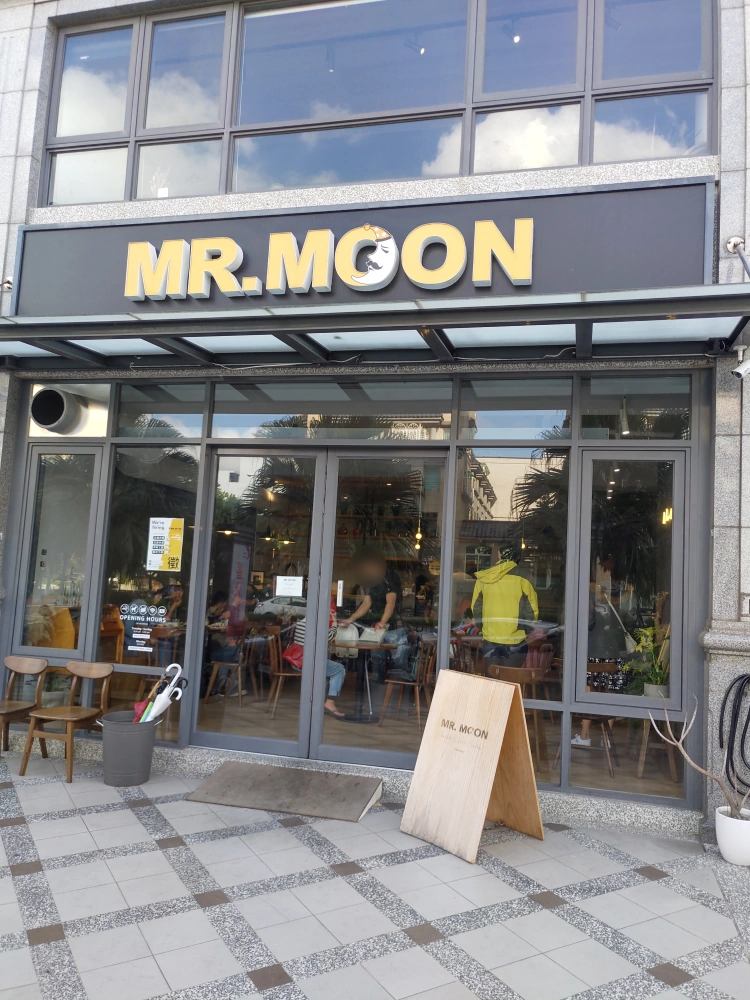
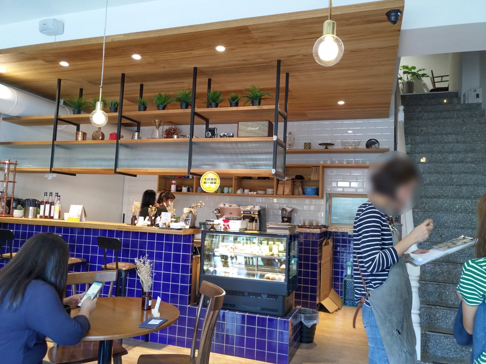
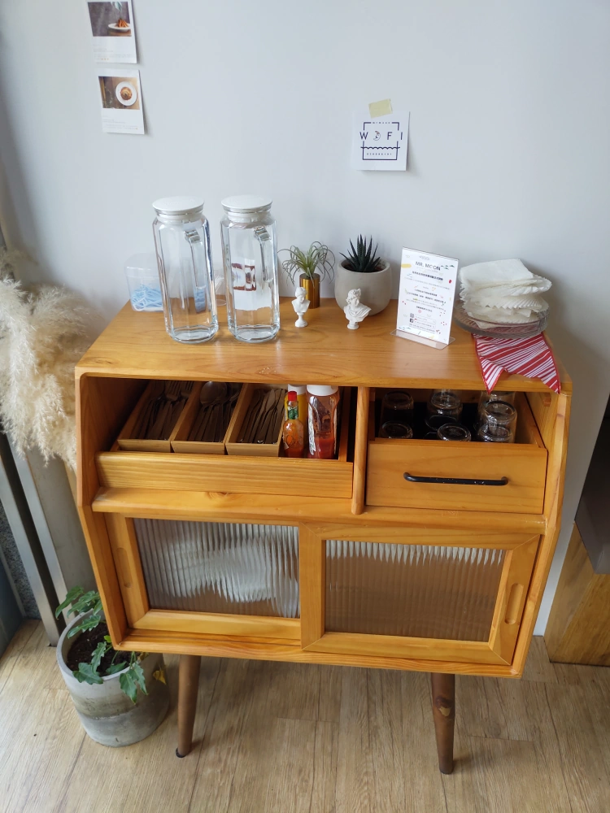
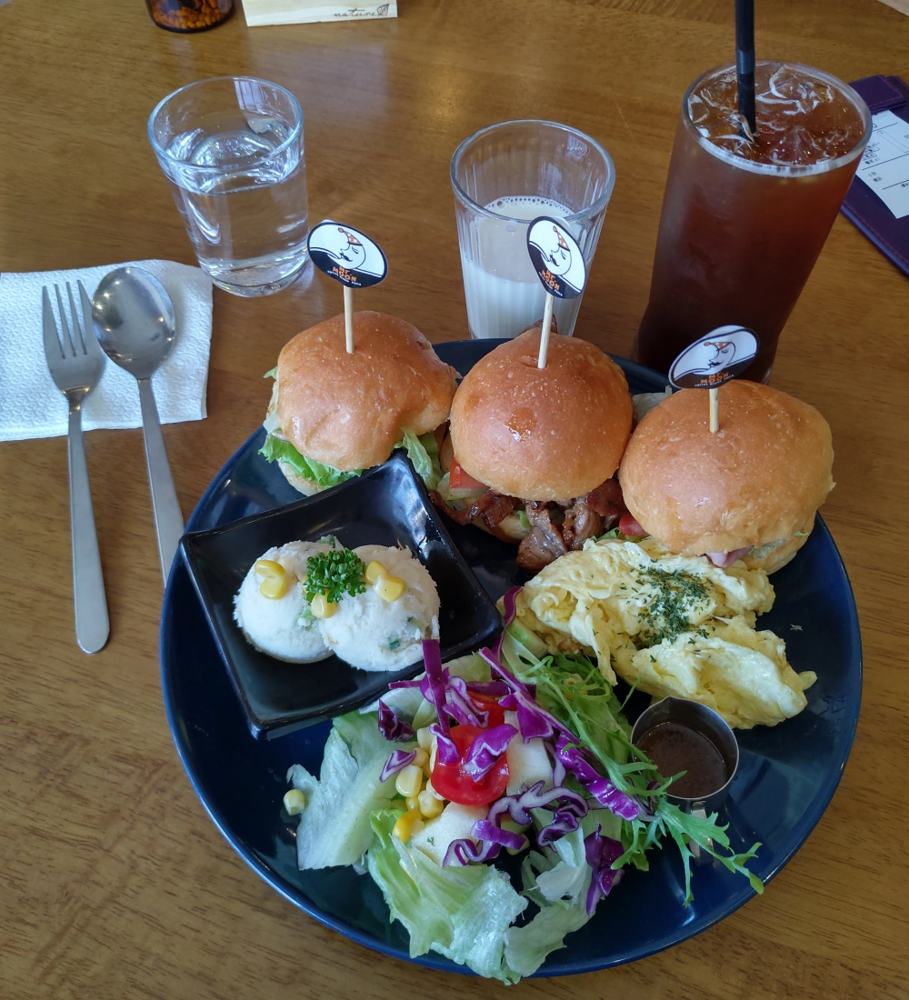
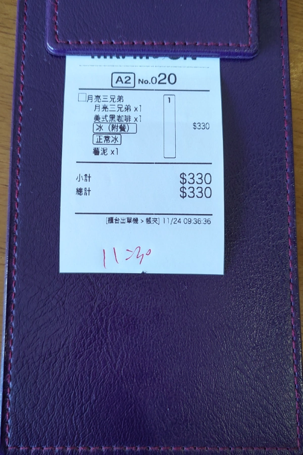

[竹北] Mr.Moon 月亮先生咖啡館
| 餐廳名稱: | Mr.Moon 月亮先生咖啡館 |
|---|---|
| 地 址: | 新竹縣竹北市嘉豐五路二段29號 |
| 營業時間: | 週二~週日 08:00~17:00 |
| 週一公休 | |
| 電 話: | 03 658 6191 |
月亮先生 之前就聽說了，主打整天都能吃到早午餐，在文信路的時候就想去拜訪了，現在搬到嘉豐五路二段，今天早上醒來，一人在家，亂想亂想，想到這間，就來試試看吧。
這個新住址是一個大廈的一樓店面，這邊規劃每個店面有統一形狀的招牌。 隔壁幾間是 BACK-HAUS德國麵包，也小有名氣，改天再介紹。 
正門口。今天是假日，很多人吃 Brunch ，月亮先生咖啡館 在我用餐的時段，幾乎都是客滿的。 
進門的裡面就是櫃台，新住址有兩層樓，樓梯在最右邊。廚房在櫃檯的後方，餐點是用樓梯與櫃台中間那個小窗戶送出來。 
桌椅區的一個角落，擺著餐具、開水、番茄醬等。這邊餐具、開水要自取。 
這次，我有拍菜單，但是超誇張的，拍了 20 頁，仔細看一下，大概是幾種素材的排列組合。請各位直接看官方版的 月亮先生咖啡館 FB粉絲頁 菜單 好了，比我的版本清楚，而且它兩頁湊成一張，所以只有10張圖。
我點了 全日早午餐裡面的 月亮三兄弟。有三個小漢堡，從左到右，分別是鮭魚、焦糖洋蔥牛肉、火腿 口味，味道都不錯。三個漢堡麵包有稍微烤過，熱鬆軟。 漢堡可能太小了，都沒夾蛋，取而代之的是 炒蛋，炒蛋嫩鹹。 炸物則是替換成薯泥，薯泥有調味並加一點玉米、黃瓜小碎塊等。飲料加20 元升級為冰咖啡。 
最後的帳單，沒再收服務費，就是這個價格。 
月亮先生咖啡館 提供全日早午餐，但也有義大利麵、燉飯等適合午餐的餐點，整個營業時間都可以來。今天用餐的感覺不錯，客滿就已經說明被市場接受了。 從它的FB粉絲頁得知月亮先生去年結婚、小孩剛誕生，難怪沒瞄到男性工作人員。祝福月亮先生 生活幸福，生意興隆囉。